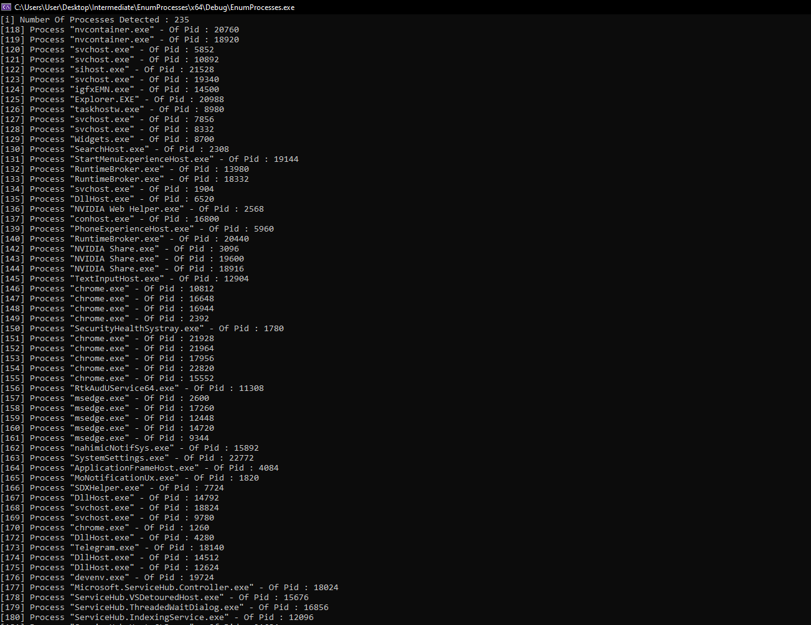
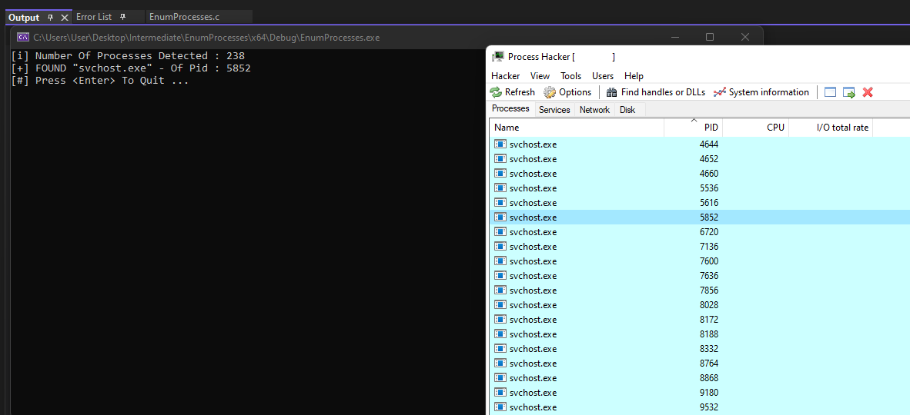

Introduction
One way to perform process enumeration was previously demonstrated in the process injection module that used CreateToolHelp32Snapshot. This module will demonstrate another way to perform process enumeration using EnumProcesses.
It's important for malware authors to be able to implement a technique within their malware in several ways to remain unpredictable in their actions.
EnumProcesses
Start by reviewing Microsoft's documentation on EnumProcesses. Notice that the function returns the Process IDs (PIDs) as an array, without the associated process names. The problem is that only having PIDs without the associated process names makes it difficult to identify the process from a human perspective.
The solution is to use the OpenProcess, GetModuleBaseName and EnumProcessModules WinAPIs.
OpenProcess will be used to open a handle to a PID with PROCESS_QUERY_INFORMATION and PROCESS_VM_READ access rights.EnumProcessModules will be used to enumerate all the modules within the opened process. This is required for step 3.GetModuleBaseName will determine the name of the process, given the enumerated process modules from step 2.EnumProcesses Advantage
Using the CreateToolhelp32Snapshot process enumeration method, a snapshot is created and a string comparison is performed to determine whether the process name matches the intended target process. The issue with that method is when there are multiple instances of a process running at different privilege levels, there's no way to differentiate them during the string comparison. For example, some svchost.exe processes run with normal user privileges whereas others run with elevated privileges. There is no way to determine the privilege level of svchost.exe during the string comparison. Therefore the only indicator as to whether it's privileged is if the OpenProcess call fails (assuming that the implementation is running with normal user privileges).
On the other hand, using the EnumProcesses process enumeration method provides the PID and handle to the process, and the objective is to obtain the process name. This method is guaranteed to be successful since a handle to the process already exists.
Code Walkthrough
This section will explain code snippets that are based on Microsoft's example of process enumeration.
PrintProcesses Function
PrintProcesses is a custom function that prints the process name and PID of the enumerated processes. Only processes running with the same privileges as the implementation can have their information retrieved. Information about elevated processes cannot be retrieved, again, assuming the implementation is running with normal user privileges. Attempts to open a handle to high-privileged processes using OpenProcess will result in ERROR_ACCESS_DENIED error.
It's possible to use OpenProcess's response as an indicator to determine if the process can be targeted. Processes that cannot have a handle open to them cannot be targeted whereas the ones with a handle successfully opened can be targeted.
BOOL PrintProcesses() {
DWORD adwProcesses [1024 * 2],
dwReturnLen1 = NULL,
dwReturnLen2 = NULL,
dwNmbrOfPids = NULL;
HANDLE hProcess = NULL;
HMODULE hModule = NULL;
WCHAR szProc [MAX_PATH];
// Get the array of PIDs
if (!EnumProcesses(adwProcesses, sizeof(adwProcesses), &dwReturnLen1)) {
printf("[!] EnumProcesses Failed With Error : %d \n", GetLastError());
return FALSE;
}
// Calculating the number of elements in the array
dwNmbrOfPids = dwReturnLen1 / sizeof(DWORD);
printf("[i] Number Of Processes Detected : %d \n", dwNmbrOfPids);
for (int i = 0; i < dwNmbrOfPids; i++) {
// If process is not NULL
if (adwProcesses[i] != NULL) {
// Open a process handle
if ((hProcess = OpenProcess(PROCESS_QUERY_INFORMATION | PROCESS_VM_READ, FALSE, adwProcesses[i])) != NULL) {
// If handle is valid
// Get a handle of a module in the process 'hProcess'
// The module handle is needed for 'GetModuleBaseName'
if (!EnumProcessModules(hProcess, &hModule, sizeof(HMODULE), &dwReturnLen2)) {
printf("[!] EnumProcessModules Failed [ At Pid: %d ] With Error : %d \n", adwProcesses[i], GetLastError());
}
else {
// If EnumProcessModules succeeded
// Get the name of 'hProcess' and save it in the 'szProc' variable
if (!GetModuleBaseName(hProcess, hModule, szProc, sizeof(szProc) / sizeof(WCHAR))) {
printf("[!] GetModuleBaseName Failed [ At Pid: %d ] With Error : %d \n", adwProcesses[i], GetLastError());
}
else {
// Printing the process name & its PID
wprintf(L"[%0.3d] Process \"%s\" - Of Pid : %d \n", i, szProc, adwProcesses[i]);
}
}
// Close process handle
CloseHandle(hProcess);
}
}
// Iterate through the PIDs array
}
return TRUE;
}GetRemoteProcessHandle Function
The code snippet below is an update to the previous PrintProcesses function. GetRemoteProcessHandle will perform the same tasks as PrintProcesses except it will return a handle to the specified process.
The updated function uses wcscmp to verify the target process. Furthermore, OpenProcess's access control is changed from PROCESS_QUERY_INFORMATION | PROCESS_VM_READ to PROCESS_ALL_ACCESS to provide more access to the returned process object.
BOOL GetRemoteProcessHandle(LPCWSTR szProcName, DWORD* pdwPid, HANDLE* phProcess) {
DWORD adwProcesses [1024 * 2],
dwReturnLen1 = NULL,
dwReturnLen2 = NULL,
dwNmbrOfPids = NULL;
HANDLE hProcess = NULL;
HMODULE hModule = NULL;
WCHAR szProc [MAX_PATH];
// Get the array of PIDs
if (!EnumProcesses(adwProcesses, sizeof(adwProcesses), &dwReturnLen1)) {
printf("[!] EnumProcesses Failed With Error : %d \n", GetLastError());
return FALSE;
}
// Calculating the number of elements in the array
dwNmbrOfPids = dwReturnLen1 / sizeof(DWORD);
printf("[i] Number Of Processes Detected : %d \n", dwNmbrOfPids);
for (int i = 0; i < dwNmbrOfPids; i++) {
// If process is not NULL
if (adwProcesses[i] != NULL) {
// Open a process handle
if ((hProcess = OpenProcess(PROCESS_QUERY_INFORMATION | PROCESS_VM_READ, FALSE, adwProcesses[i])) != NULL) {
// If handle is valid
// Get a handle of a module in the process 'hProcess'.
// The module handle is needed for 'GetModuleBaseName'
if (!EnumProcessModules(hProcess, &hModule, sizeof(HMODULE), &dwReturnLen2)) {
printf("[!] EnumProcessModules Failed [ At Pid: %d ] With Error : %d \n", adwProcesses[i], GetLastError());
}
else {
// If EnumProcessModules succeeded
// Get the name of 'hProcess' and save it in the 'szProc' variable
if (!GetModuleBaseName(hProcess, hModule, szProc, sizeof(szProc) / sizeof(WCHAR))) {
printf("[!] GetModuleBaseName Failed [ At Pid: %d ] With Error : %d \n", adwProcesses[i], GetLastError());
}
else {
// Perform the comparison logic
if (wcscmp(szProcName, szProc) == 0) {
wprintf(L"[+] FOUND \"%s\" - Of Pid : %d \n", szProc, adwProcesses[i]);
// Return by reference
*pdwPid = adwProcesses[i];
*phProcess = hProcess;
break;
}
}
}
CloseHandle(hProcess);
}
}
}
// Check if pdwPid or phProcess are NULL
if (*pdwPid == NULL || *phProcess == NULL)
return FALSE;
else
return TRUE;
}PrintProcesses - Example

GetRemoteProcessHandle - Example
